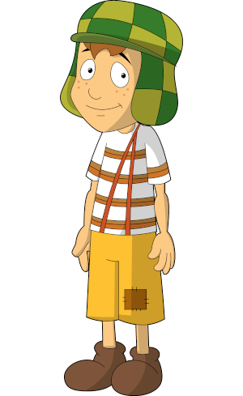

Tudo começou em 1971, quando o humorista Roberto Gómez Bolaños (conhecido como Chespirito)
criou uma esquete em que um garoto de oito anos de idade conversava com um vendedor de balões.
E foi assim que o garoto atrapalhado ganhou uma história e um nome: era o começo do El Chavo del Ocho!
Chaves é o seriado mexicano de maior sucesso no Brasil.Extremamente populares até os dias
atuais, os personagens de Chaves conseguem com muito sucesso retratar tipos comuns com
os quais interagimos em nossas vidas e talvez isso, juntamente com o humor inocente,
ainda que muito inteligente, explique as legiões de fãs pelo mundo todo.
A série contou conta com 7 temporadas, em todas elas a mesma abertura foi passada.
mp3:
mp4:
As montagens são simplismente sensacionais, nesta eles cantam YMCA do Village People.
'Ninguém tem paciência comigo'
